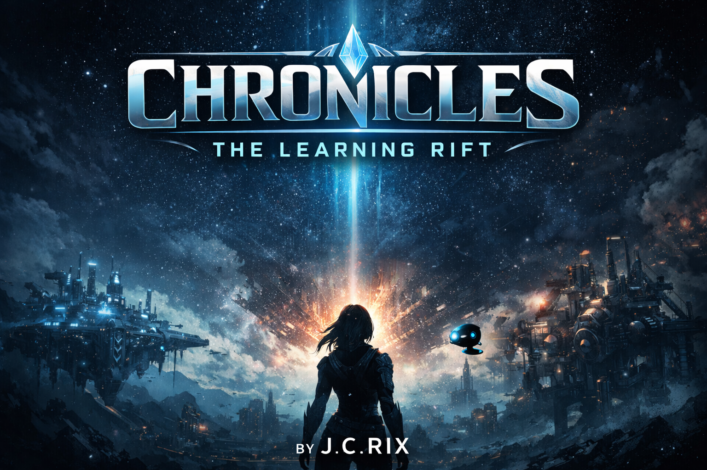

Building intelligent systems through story and play.
Rix Interactive creates narrative-driven interactive experiences that blend science fiction, systems thinking, and meaningful decision-making.
Our first project is Chronicles: The Learning Rift — a connected sci-fi universe spanning a novel and an interactive experience.

A cinematic sci-fi story and interactive experience set in a collapsing world of systems, infrastructure, and restoration.
Chronicles
In Chronicles, broken infrastructure is more than a backdrop — it is the battlefield. Systems become places. Failures become ruptures. Repair becomes survival.
Systems made physical
Pipelines, artifacts, deployment chains, and failures become living structures inside a collapsing digital world.
Collapse and restoration
The central struggle is not only against corruption and hostile forces, but against the unraveling of the system itself.
Story and interaction aligned
The novel and the game stand on their own while reinforcing the same core idea: learning to think inside complex systems.
The Book
Chronicles: The Learning Rift by J. C. Rix is a cinematic science fiction novel set in a world where collapsing infrastructure and digital systems shape the fate of the real world.
A world in collapse
Nathan Hale, a practical man with a systems mechanic’s instincts, is pulled into a fractured universe where repair, survival, and understanding are inseparable.
- Cinematic sci-fi atmosphere
- Systems-driven worldbuilding
- High-stakes collapse and restoration
In final polish
The manuscript is complete and moving through final refinement for release preparation.
- Draft complete
- Cover in development
- Publishing preparation underway
The Game
The Chronicles interactive experience places players inside failing systems where they must interpret signals, make critical decisions, and restore stability under pressure.
Incident-driven system restoration
Players step into connected mission scenarios built around shared incidents, where understanding flow, diagnosing evidence, and choosing the best next move all matter.
- Adaptive mission generation
- Decision-driven gameplay
- Systems-thinking under pressure
In active development
The core mission system is functional and evolving toward a polished, immersive learning experience.
- Playable vertical slice complete
- Shared mission context implemented
- Frontend polish in progress
About Rix Interactive
Rix Interactive is an independent studio focused on building immersive, systems-driven worlds that blend narrative, intelligent interaction, and meaningful decision-making.